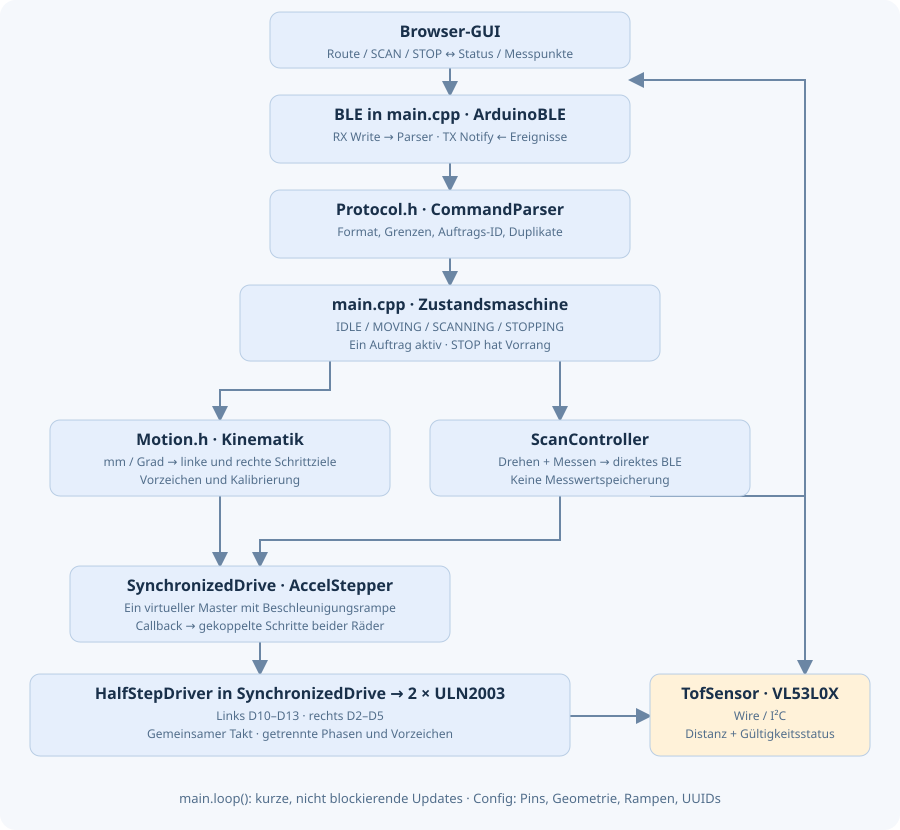

Arduino-Interface
Der Browser plant die Route. Der Arduino führt immer einen Auftrag aus, zählt die Motorschritte und meldet Abschluss oder Scan-Messungen per BLE zurück.
1 · Aufbau und Anschlüsse
Board mit BLE und den benötigten GPIOs wählen; ein klassischer Uno allein bietet kein BLE. Im PlatformIO-Projekt ist inzwischen der Arduino UNO R4 WiFi ausgewählt. Angenommen sind zwei 28BYJ-48, 5 V mit je einem ULN2003-Treiber. Motoren aus einer ausreichend dimensionierten 5-V-Versorgung speisen, gemeinsame Masse mit dem Controller. GPIOs steuern nur die Treibereingänge.
| Teil | Zuordnung |
|---|---|
| Rechter Treiber IN1–IN4 | D2, D3, D4, D5 · positive Sequenz = rechtes Rad vorwärts |
| Linker Treiber IN1–IN4 | D10, D11, D12, D13 · positive Sequenz = linkes Rad rückwärts |
| VL53L0X V2 | Boardabhängige SDA/SCL, GND, Versorgung passend zum konkreten Breakout. „V2“ garantiert keine 5-V-Verträglichkeit. |
Die positive Sequenz und IN1–IN4-Zuordnung zuerst mit angehobenen Rädern prüfen. Falls nötig je Motor ein konfigurierbares Vorzeichen invertieren. Beide Motoren zeitlich gemeinsam takten, mit Beschleunigungsrampe und nicht blockierender Zustandsmaschine; BLE bleibt während der Bewegung bedienbar.
2 · Winkel und Strecke → Motorschritte
Radradius r = 32 mm, halber Radstand a = 41 mm. Startwert N = 4096 Halbschritte/Radumdrehung bei nominal 64:1; tatsächlichen Getriebefaktor, Radradius und effektiven Radstand später kalibrieren. Vollschritt und Halbschritt dürfen nicht verwechselt werden. Die Halbschrittfolge für IN1–IN4 lautet:
1000 → 1100 → 0100 → 0110 → 0010 → 0011 → 0001 → 1001 Positive Richtung: Folge vorwärts. Negative Richtung: Folge rückwärts.
Radumfang U = 2πr = 201,062 mm Geradeaus s: n = round(s · N / U) Drehung α: n = round(|α| · a · N / (360 · r)) 100 mm vorwärts → 2037 Halbschritte pro Rad 90° auf der Stelle → 1312 Halbschritte pro Rad 360° auf der Stelle → 5248 Halbschritte pro Rad
| Operation | Linke Sequenz D10–D13 | Rechte Sequenz D2–D5 |
|---|---|---|
| Vorwärts | −n (Rad vorwärts) | +n (Rad vorwärts) |
| Rechts drehen | −n (Rad vorwärts) | −n (Rad rückwärts) |
| Links drehen | +n (Rad rückwärts) | +n (Rad vorwärts) |
Beide Räder haben beim Drehen gleiche elektrische Sequenzrichtung, weil sie gegenläufig montiert sind. Bei Geradeausfahrt sind die Sequenzrichtungen entgegengesetzt. Schrittzahlen pro Rad separat kalibrieren; Bruchteile intern als Rest mitführen. Die heutige GUI-Animation mit 250 mm/s ist keine Vorgabe für die reale Motordrehzahl.
3 · BLE-Schnittstelle und Befehle
Eigener GATT-Service mit zwei Characteristics. Vorgeschlagene projektspezifische UUIDs:
Service: 6b616c6c-6500-4000-8000-000000000001 RX: 6b616c6c-6500-4000-8000-000000000002 Write mit Response TX: 6b616c6c-6500-4000-8000-000000000003 Notify
GUI abonniert zuerst TX und schreibt danach auf RX. ASCII, genau ein mit LF abgeschlossenes Paket pro Write/Notification, maximal 20 Byte inklusive LF; dadurch kein großes MTU erforderlich. Der folgende Transportumschlag ergänzt die vorhandenen Fahrbefehle um eine vierstellige Auftrags-ID:
C0001 R090DEGR\n → 90° rechts C0002 G100MMF\n → 100 mm vorwärts C0003 R045DEGL\n → 45° links C0004 SCAN\n → vollständiger 360°-Scan C0005 STOP\n → laufenden Auftrag abbrechen A0001\n ← angenommen, noch nicht fertig D0001\n ← Bewegung abgeschlossen E0001,BUSY\n ← abgelehnt: anderer Auftrag läuft E0001,ARG\n ← ungültiger Befehl E0001,ABORT\n ← Auftrag abgebrochen
Die GUI sendet die nächste der vier Operationen erst nach D…. Arduino akzeptiert nur einen Auftrag gleichzeitig, außer STOP. Ein bestätigter BLE-Write ersetzt keine Bewegungsbestätigung. IDs werden innerhalb einer Sitzung nicht wiederverwendet; Duplikate liefern den gespeicherten Status, ohne erneut zu fahren. Timeout: Status klären oder stoppen, keinen Fahrbefehl blind erneut ausführen. Bei Verbindungsabbruch Bewegung anhalten und Route verwerfen.
Derzeit deaktivierte Geräteauswahl später um eine Schaltfläche „Verbinden“ ergänzen: Der Browser zeigt nach Klick seinen BLE-Gerätedialog. Web Bluetooth braucht einen unterstützten Browser und einen sicheren Kontext, etwa HTTPS oder localhost. Nach Verbindung werden Gerät und Zustand in der Auswahl angezeigt.
4 · Kontinuierlicher 360°-Scan mit dem VL53L0X
Der Sensor sitzt 20 mm vor der Drehachse und misst kontinuierlich mit 33-ms-Messbudget. Nach einer ersten Messung bei 0° dreht der Roboter in einer einzigen Fahrt um volle 360°. Zwischenstopps und Einschwingpausen pro Messung entfallen.
Höchstgeschwindigkeit: 1050 Halbschritte/s, Beschleunigung: 540 Halbschritte/s² – jeweils dreimal der vorherige Wert. Diese Werte gelten für normale Drehbefehle. Scans verwenden zur Verringerung von Stalls separat 650 Halbschritte/s und 300 Halbschritte/s². Vorwärtsfahrt verwendet inzwischen 1000 Halbschritte/s und 600 Halbschritte/s², reduziert für mehr Drehmomentreserve. Die theoretische Scan-Drehzeit beträgt etwa 10,24 s, reale Laufzeit inklusive Sensorstart, Software und Funk kann länger sein. Höhere Geschwindigkeit muss am realen Roboter auf Schrittverluste geprüft werden.
Die Firmware hält eine Schritthistorie und interpoliert für jedes Ergebnis den Winkel zur geschätzten Mitte des Integrationsfensters. Damit werden auch Anfahren und Bremsen berücksichtigt. Ohne Sensor-Interrupt und Encoder bleibt dies eine zeitliche Schätzung. I²C läuft mit 400 kHz; Messbereitschaft wird ohne Warte-Schleife abgefragt.
Die Firmware speichert keine Entfernungsmesswerte. Jeder Punkt wird sofort direkt per BLE gesendet, ohne Wiederholpuffer und ohne 512-Punkte-Limit. Nur die GUI sammelt die empfangenen Punkte. Eine kleine Historie der Motorschritte bleibt für die Winkelzuordnung erforderlich.
S0004,BEGIN\n P00000,0850,0\n ← Winkel (Hundertstelgrad), Distanz (mm), Qualität P00199,0862,0\n ... S0004,END,217\n ← Anzahl erzeugter Punkte, beispielhaft 217 D0004\n
Kein Sampleindex mehr im P-Paket. Qualität: 0 gültig, 1 ungültig, 2 Timeout. GET und COUNT sind entfernt. Kann ein Punkt nicht sofort gesendet werden, wird er verworfen; die Drehung läuft weiter. Die GUI behält alle empfangenen Punkte und meldet Abweichungen zur END-Anzahl. Firmware und GUI gemeinsam aktualisieren.
5 · Hindernisse an der richtigen Stelle anzeigen
Dieselben Koordinaten wie in der GUI verwenden: x nach rechts, y nach unten, 0° nach rechts, positive Winkel im Uhrzeigersinn. Der Sensor schaut entlang der Roboterblickrichtung. Für den gültigen Messwert d bei relativem Scanwinkel α:
β = θ₀ + α (für sin/cos in Radiant umrechnen) xSensor = x₀ + 20 · cos(β) ySensor = y₀ + 20 · sin(β) xTreffer = xSensor + d · cos(β) yTreffer = ySensor + d · sin(β)
Jeden gültigen Treffer sofort als Hindernispunkt zeichnen. Die Distanz startet am Sensor, deshalb muss der 20-mm-Versatz mitgerechnet werden. Punkte außerhalb der Zeichenfläche nicht auf den Rand klemmen: ausblenden und als außerhalb vermerken. Unbekannte Bereiche bleiben unbekannt; verdeckte Hindernisse werden nicht erfunden.
Der VL53L0X liefert eine Entfernung pro Messung, keine Kamera-Punktwolke. Laut ST beträgt die Reichweite unter passenden Bedingungen bis zu 2 m, das Sichtfeld etwa 25°. Kleine oder verdeckte Objekte, besonders der Tischtennisball, werden daher nicht zuverlässig getrennt erkannt. Die GUI zeigt Entfernungstreffer mit Unsicherheit, nicht automatisch alle Objekte oder eine sichere Ballklassifikation.
Für absolute Kartenkoordinaten braucht die reale Fahrt eine bekannte Anfangspose. Ohne externe Ortung oder Encoder sind Position und Scanwinkel nur aus Schritten geschätzt: Schlupf, Getriebespiel und Schrittverluste verursachen Fehler. Ein Scan ersetzt keine automatische globale Positionsbestimmung.
6 · Einbau in die bestehende GUI
Ohne BLE erzeugt Scan simulierte Entfernungstreffer. Mit verbundenem Roboter fordert Scan die Messrunde an, statt Positionen zu würfeln. Während Fahrt oder Scan sind neue Fahrpläne gesperrt; ein Stop-Knopf bleibt aktiv. Live-Punkte, Scanfortschritt und Verbindungsstatus werden angezeigt. Erst nach vollständigem Scan wird die neue Hinderniskarte als vollständig markiert.
Firmware in src/ aufteilen: Befehlsparser/BLE, Motion-Controller, Motorsequenzen, ToF-Livestream und Kalibrierparameter. Zuerst Räder einzeln prüfen, dann 100-mm-Fahrt und 90°-Drehung kalibrieren, anschließend Scan gegen eine Wand bekannter Entfernung testen. Die Modellnummer der BYJ-Motoren vor der Implementierung bestätigen; das Board ist inzwischen als UNO R4 WiFi festgelegt.
7 · Bibliotheken und synchrone Beschleunigung
Das PlatformIO-Projekt verwendet jetzt den Arduino UNO R4 WiFi (renesas-ra / uno_r4_wifi). Die Bibliotheken sind in platformio.ini eingetragen:
lib_deps =
waspinator/AccelStepper
arduino-libraries/ArduinoBLE
pololu/VL53L0X| Bibliothek | Aufgabe |
|---|---|
| AccelStepper | Beschleunigen, Maximalgeschwindigkeit, Abbremsen und nicht blockierende Schrittplanung. |
| ArduinoBLE | GATT-Service, RX-Kommandos und TX-Notifications über das BLE-Modul des UNO R4 WiFi. |
| VL53L0X (Pololu) | ToF-Konfiguration, Messbudget, Distanz und Timeout. |
| Arduino.h und Wire.h | GPIO, Zeitbasis und I²C; Bestandteil des Arduino-Frameworks, keine zusätzlichen lib_deps. |
ULN2003 benötigt keine eigene Bibliothek. Für das ASCII-Protokoll ist auch keine JSON-Bibliothek nötig. Die erfolgreich kompilierten Versionen sind in platformio.ini festgeschrieben: AccelStepper 1.64.0, ArduinoBLE 2.1.0, VL53L0X 1.3.1 und Renesas RA 1.9.0.
Ein gemeinsamer virtueller Master: AccelStepper erzeugt genau eine Beschleunigungsrampe. Sein dokumentierter Callback-Konstruktor AccelStepper(forwardStep, backwardStep) ruft unsere Schrittausgabe auf. Bei jeder fälligen Masterstufe aktualisiert diese beide Motorphasen mit den zur Operation passenden Vorzeichen. Für die bisher geplanten Geradeausfahrten und Drehungen sind die Schrittbeträge beider Räder gleich.
// Konzeptskizze, noch keine implementierte Firmware: AccelStepper master(forwardStep, backwardStep); master.setMaxSpeed(maxHalfStepsPerSecond); master.setAcceleration(halfStepsPerSecondSquared); master.moveTo(targetMasterSteps); // In jeder kurzen loop()-Runde: master.run();
Aktueller Firmwarestand: Vorwärtsfahrt wird über einen freien FspTimer des UNO R4 alle 50 µs bedient. So läuft die Schrittplanung auch während normaler BLE-Wartezeiten. Drehung und Scan bleiben im bisherigen Loop. Die Sollgeschwindigkeiten ändern sich dadurch nicht. FspTimer ist Teil des Board-Frameworks, keine zusätzliche PlatformIO-Bibliothek. Fehlt der Timer, wird der Fahrbefehl mit E…,TIMER abgelehnt.
Die beiden GPIO-Gruppen werden unmittelbar nacheinander im selben Callback aktualisiert: gemeinsamer logischer Schritttakt, keine hardwaregleichzeitigen Flanken. Der HalfStepDriver hält pro Motor einen eigenen Index in der achtphasigen Folge. Der Callback darf nicht warten, BLE senden oder I²C lesen. Initialisierung und Abschalten der GPIOs übernimmt bei diesem Konstruktor unser Treibermodul. Nach jeder Bewegung werden alle Motorpins sofort LOW gesetzt, auch bei bestehender BLE-Verbindung. Der nächste Fahrbefehl schaltet die Spulen wieder ein; im Stillstand gibt es kein elektrisches Haltemoment.
Wenn die spätere Radkalibrierung unterschiedliche Schrittbeträge ergibt, verteilt ein ganzzahliger DDA/Bresenham-Zähler die Radschritte auf max(|nLinks|, |nRechts|) Masterstufen. Beide Ziele enden damit gemeinsam unter demselben Rampenprofil. Das Kopplungsmodul ist eigener Firmwarecode; AccelStepper liefert die Rampe, nicht automatisch diese Zweiradkopplung.
MultiStepper unterstützt nur konstante Geschwindigkeit und wird deshalb nicht für diese Rampen verwendet. AccelStepper bietet eine Beschleunigungs-/Bremsrampe, keine ruckbegrenzte S-Kurve. Rampen und Maximalgeschwindigkeit werden am realen Roboter getestet.
run() häufig aufrufen; weder delay() noch runToPosition() im Fahrbetrieb. ToF kontinuierlich über Bereitschaftsabfragen auslesen, ohne auf eine fertige Messung zu warten; den Motortakt zwischen Registerzugriffen bedienen und BLE-Verarbeitung kurz halten. Bei STOP kontrolliert abbremsen, weiter run() bedienen und erst nach Stillstand den Abbruch bestätigen. Ein harter Stopp bleibt ein eigener Fehlerpfad.
Die offiziellen AccelStepper-Callbacks und run()-Methoden, ArduinoBLE inklusive UNO-R4-WiFi-Unterstützung und die Pololu-Sensorbibliothek bilden die Grundlage. Funkmodul-Firmware und Boardpaket müssen zur ArduinoBLE-Version passen. Der UNO-R4-Build und Hosttests bestehen. Laufzeittiming, BLE und Sensor sind noch an echter Hardware zu prüfen.
8 · Strukturdiagramm der Firmware
Die Pfeile zeigen die wichtigsten Aufrufe und Datenwege. Status und Scanwerte werden als Ereignisse zurück an BleTransport gegeben und über TX übertragen.

src/ main.cpp setup(), kurze kooperative loop() Config.h Pins, Geometrie, Rampen, UUIDs BleTransport.h/.cpp Verbindung, RX/TX, Ereignispuffer CommandParser.h/.cpp Validierung, IDs, Duplikate RobotController.h/.cpp Zustandsmaschine und Auftragsablauf MotionController.h/.cpp Umrechnung mm/Grad → Radschritte SynchronizedDrive.h/.cpp AccelStepper-Master, Kopplung/DDA HalfStepDriver.h/.cpp Motorphasen und GPIO-Ausgabe ScanController.h/.cpp Scanfolge und Live-Übertragung TofSensor.h/.cpp VL53L0X-Zugriff über Wire
Die Firmware ist inzwischen implementiert: BLE-Transport und RobotController liegen gemeinsam in main.cpp, der Parser in Protocol.h, die Kinematik in Motion.h und die Halbschrittausgabe in SynchronizedDrive.cpp. Die Browser-GUI unterstützt inzwischen BLE und eine 1.000 × 1.000-mm-Karte. Nach einem Scan liegt der Roboter im lokalen Kartenmittelpunkt und zeigt nach oben. Hardwaretests stehen noch aus.